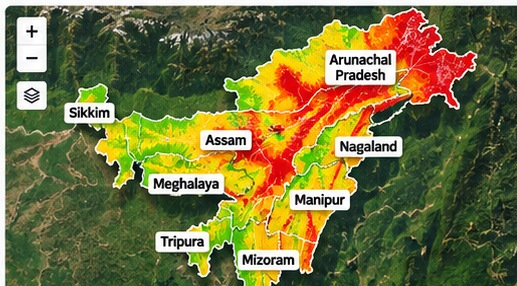
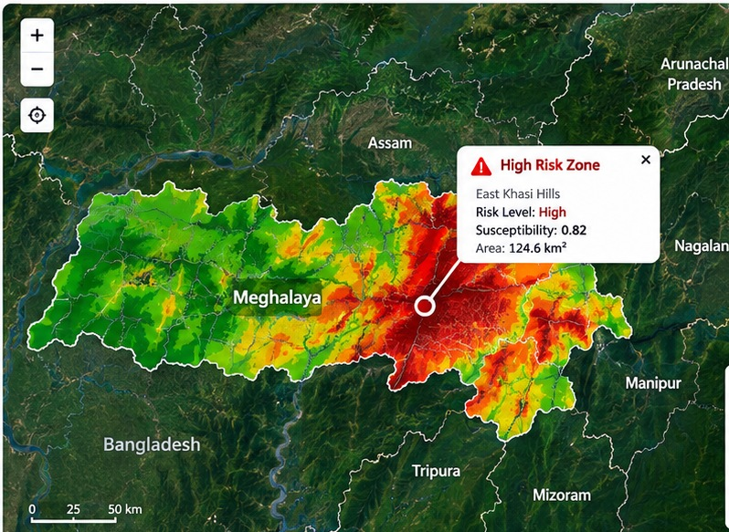
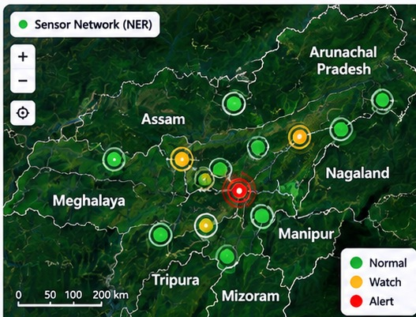
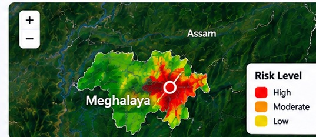

East Khasi Hills, Meghalaya
◷ 6 hours leftHeavy rainfall (124 mm/24h) with high slope susceptibility. Landslide likely in next 6–12 hours.
Real-time landslide risk monitoring and early warning for Northeast India

Landslide susceptibility, real-time risk and exposure analysis for Northeast India

Real-time sensor data, weather updates and slope condition monitoring

Likely in parts of Nagaland, Manipur and adjoining areas.
Increased rainfall and high soil moisture observed. Continue close monitoring.
| Sensor ID | Location | Rainfall (mm/h) | Soil Moisture (%) | Displacement (mm/day) | Status | Last Update |
|---|---|---|---|---|---|---|
| NER-SN-014 | Kohima, Nagaland | 14.2 | 72.1 | 2.4 | Watch | 24 Nov 2026, 10:24 AM |
| NER-SN-027 | East Khasi Hills, Meghalaya | 6.8 | 58.4 | 0.9 | Normal | 24 Nov 2026, 10:23 AM |
| NER-SN-033 | Dima Hasao, Assam | 28.6 | 78.3 | 3.8 | Alert | 24 Nov 2026, 10:22 AM |
AI-generated risk alerts and landslide early warnings for proactive action
Heavy rainfall (124 mm/24h) with high slope susceptibility. Landslide likely in next 6–12 hours.
Continuous rainfall (68 mm) and increasing soil moisture (72%). Slope instability observed.
High soil moisture (78%) and slope displacement (4.2 mm/day) detected.
Rainfall forecast of 80–110 mm in next 24 hours. Moderate landslide risk.
Light to moderate rainfall expected. No immediate risk.

Demonstration workflow only. Official warnings require authorized review.
Ground observations, incident submissions and field verification workflow
| Report ID | Location | Reported By | Incident Type | Date & Time | Priority | Status | Action |
|---|---|---|---|---|---|---|---|
| FLD-2026-024 | East Khasi Hills, Meghalaya | R. Sangma | Crack / slope movement | 24 Nov, 09:42 AM | High | Pending | |
| FLD-2026-023 | Dima Hasao, Assam | A. Deka | Road blockage | 23 Nov, 04:18 PM | Medium | Verified | |
| FLD-2026-022 | Kohima, Nagaland | T. Zeliang | Heavy seepage | 23 Nov, 11:05 AM | Medium | Pending | |
| FLD-2026-021 | West Kameng, Arunachal | N. Tsering | Minor landslide | 22 Nov, 02:31 PM | High | Verified | |
| FLD-2026-020 | Aizawl, Mizoram | L. Lalruat | Surface erosion | 21 Nov, 10:12 AM | Low | Verified |
Connected data sources, sensor inventory and ingestion health
| Sensor ID | Location | Sensor Type | Last Reading | Battery | Connectivity | Status |
|---|---|---|---|---|---|---|
| NER-SN-014 | Kohima, Nagaland | Rain gauge | 14.2 mm/h | 92% | 4G / LoRa | Online |
| NER-SN-027 | East Khasi Hills | Soil moisture | 58.4% | 88% | LoRa | Online |
| NER-SN-033 | Dima Hasao, Assam | Slope displacement | 3.8 mm/day | 76% | 4G | Alert |
| NER-SN-041 | West Kameng | Tilt sensor | 0.21° | 14% | Offline | Low battery |
Pipeline status is illustrative. No external APIs or hardware are connected in this frontend prototype.
Model configuration, prediction overview and validation metrics
Ensemble classifier for susceptibility mapping.
Gradient boosting for tabular geospatial features.
Reference model for comparison and calibration.
Spatial and temporal holdouts, class-balance review, false-alarm analysis and uncertainty reporting.
Metrics will appear after model training and independent validation. No performance is claimed in this demo.
Regional summaries, trends and downloadable demonstration reports
Demonstration user roles and access permissions
| Name | Role | Assigned Region | Last Active | Status | |
|---|---|---|---|---|---|
| Ronit Verma | admin@nerlrms.demo | System Admin | All Northeast | Just now | Active |
| Ananya Das | ananya@nerlrms.demo | Disaster Authority | Assam | Today, 09:12 | Active |
| Tashi Norbu | tashi@nerlrms.demo | Field Officer | Arunachal Pradesh | Yesterday | Active |
| Meghna Sangma | meghna@nerlrms.demo | Analyst | Meghalaya | 22 Nov 2026 | Pending |
Prototype preferences, notification rules and display configuration
Enter a sample ground observation. This form is frontend-only.